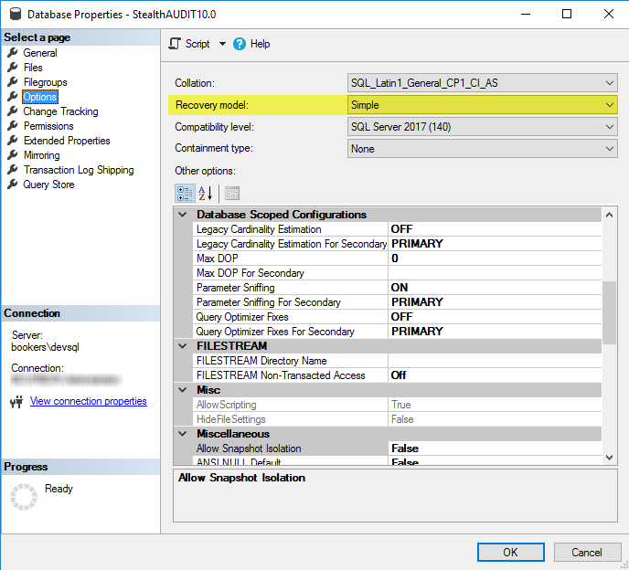

Summary: Diagnosing full transaction logs, or or not enough space on volume, to accommodate growth issues.
Issue: Transaction log for database is full
Instructions: First, ensure the database is set to simple recovery model, by either;
1) Connecting to the SQL instance with SQL Server Management Studio (SSMS) > right click the database > database properties > options page > recovery model
2) run the following in a new query in SSMS:
SELECT name, recovery_model_desc FROM sys.databases WHERE name = 'nameOfDatabase' ; GO
(Info on how to modify recovery model below)
StealthAUDIT requires a simple recovery model.
We do not support using full recovery model for several reasons, including
2) most data gets replaced every scan and
3) we can't support rollbacks or point in time recoveries due to correlated data stored outside of SQL.
Here is a link to an MSDN article detailing the different reasons for this
error:
https://msdn.microsoft.com/en-us/library/ms190925.aspx
Here are a couple common reasons:
1) ACTIVE_TRANSACTION
2) ACTIVE_BACKUP_OR_RESTORE
-
-
-
- If a data backup is preventing log truncation, canceling the backup operation might help the immediate problem.
-
-
3) LOG_BACKUP
To Modify the Recovery Mode of the SQL Database:
1. Open SQL Management Studio and connect to the StealthAUDIT SQL Server
2. Go to Databases and locate the StealthAUDIT database
3. Right Click on the database and go to properties
4. On the left hand side of the properties page - go to Options.
5. Change Recovery Model: to Simple and Press Ok to Save
***Note: Not all StealthAUDIT administrators will have rights to make this modification and the request may have to go to their DBAs***
To see more information on shrinking log files in SQL: http://msdn.microsoft.com/en-us/library/ms189493.aspx
Product: StealthAUDIT
Module: Database/SQL
Versions: All